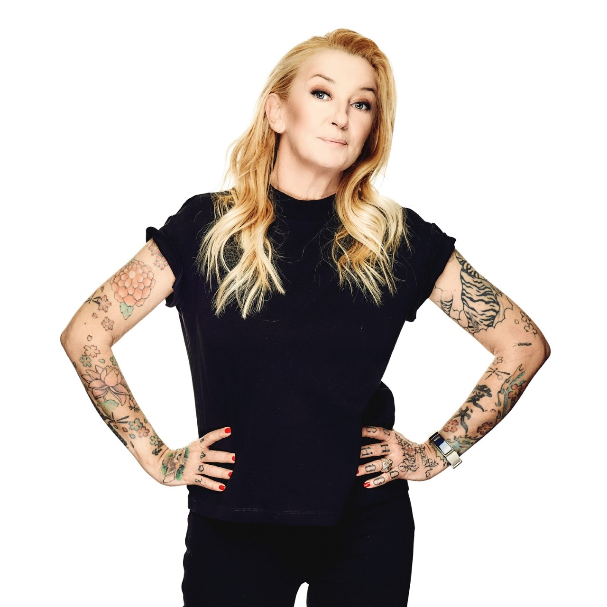
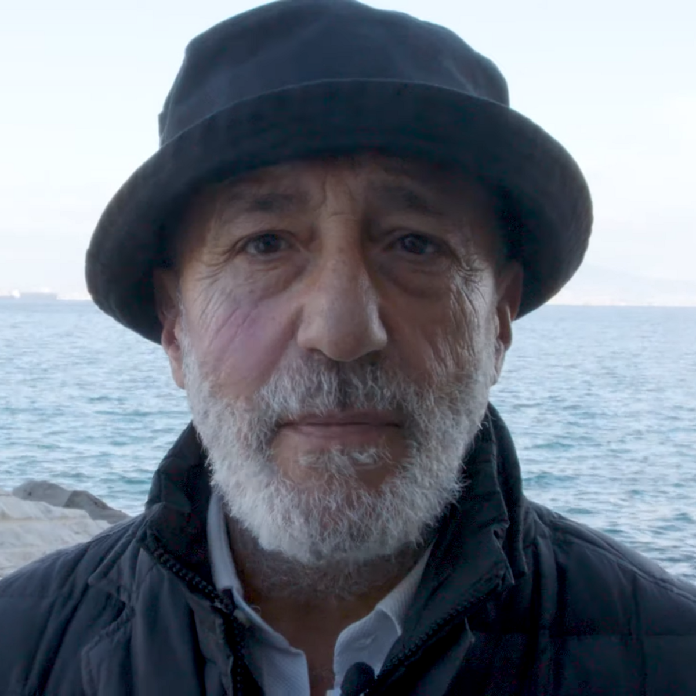

Chi siamo
Siamo un piccolo team di appassionati di alimentazione sostenibile, agricoltura e cultura gastronomica. Il progetto Leguminum nasce con un obiettivo semplice ma ambizioso: far conoscere i legumi, la loro storia, i loro benefici e il loro ruolo fondamentale per il futuro del pianeta.
La nostra missione
Crediamo che i legumi non siano solo un alimento, ma una scelta etica e ambientale. Il nostro sito vuole essere uno spazio educativo dove scoprire curiosità, proprietà nutrizionali, ricette e consigli su come integrare i legumi nella vita quotidiana.
Il nostro team

Giulia R.
Biologa nutrizionista e divulgatrice appassionata di sana alimentazione. Con oltre 10 anni di esperienza, Giulia si dedica alla sensibilizzazione sul valore nutrizionale dei legumi, combinando scienza e passione in ogni progetto educativo.

Luca M.
Agronomo con una profonda conoscenza della biodiversità vegetale. Luca promuove pratiche agricole sostenibili e collabora con piccole realtà locali per valorizzare i legumi autoctoni e la loro coltivazione tradizionale.
Sara P.
Designer e sviluppatrice web, ha dato forma digitale al mondo di LEGUMINUM. Attenta ai dettagli visivi, Sara crea esperienze accessibili e coinvolgenti per diffondere conoscenza in modo chiaro e creativo.
Andrea V.
Giornalista freelance, specializzato in sostenibilità ambientale. Andrea raccoglie e racconta storie legate al mondo dell’alimentazione, puntando i riflettori su scelte alimentari consapevoli e impatti sociali e ambientali.
Perché questo sito?
Vogliamo promuovere una cultura alimentare più consapevole, accessibile e rispettosa dell’ambiente. I legumi sono il simbolo di un’alimentazione sana, economica e sostenibile. Se anche tu condividi questa visione, sei nel posto giusto!